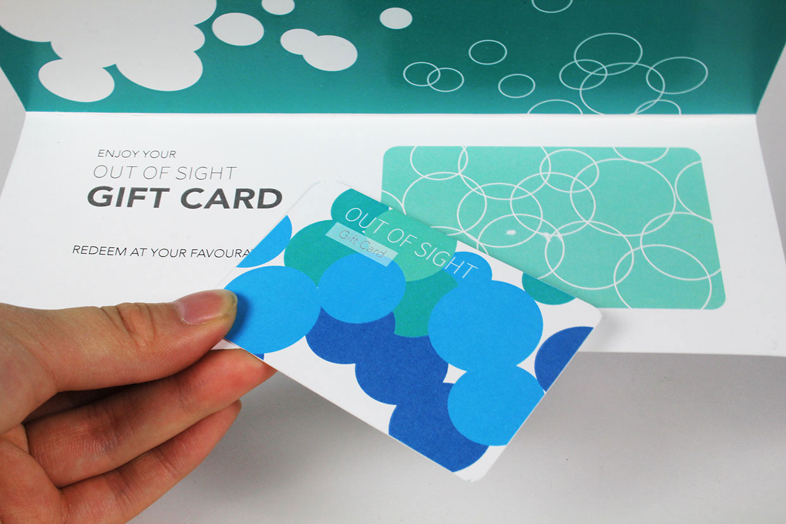
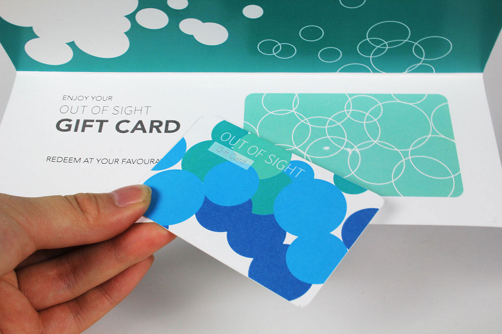

Out of sight is a cosmetic brand inspired by Beatle's song - 'I've just seen a face'. Natural, fresh and light products. Use of bubble pattern to represent water, how women wants to have perfect skin like water, clean, light and invisible.
Cosmetic products: Anti-wrinkle cream, hydration mist, perfection power foundation, mosturizing lip balm.
Other designs: Paper bag and gift card.

 
